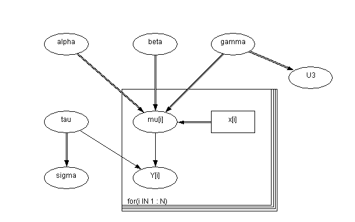

![[dugongs0]](dugongs0.bmp) Dugongs: nonlinear growth curve
Dugongs: nonlinear growth curve
Carlin and Gelfand (1991) present a nonconjugate Bayesian analysis of the following data set from Ratkowsky (1983):
The data are length and age measurements for 27 captured dugongs (sea cows). Carlin and Gelfand (1991) model this data using a nonlinear growth curve with no inflection point and an asymptote as X i tends to infinity:
Y i ~ Normal( m i , t ), i = 1,...,27
m i = a - bg Xi a , b > 0; 0 < g < 1
Standard noninformative priors are adopted for a , b and t , and a uniform prior on (0,1) is assumed for g . However, this specification leads to a non conjugate full conditional distribution for g which is also non log-concave. The graph and corresponding BUGS code is given below

model
{
for( i in 1 : N ) {
Y[i] ~ dnorm(mu[i], tau)
mu[i] <- alpha - beta * pow(gamma,x[i])
}
alpha ~ dflat()T(0,)
beta ~ dflat()T(0,)
gamma ~ dunif(0.5, 1.0)
tau ~ dgamma(0.001, 0.001)
sigma <- 1 / sqrt(tau)
U3 <- logit(gamma)
}
Data ( click to open )
Inits for chain 1 Inits for chain 2 ( click to open )
Results
A 1000 update burn in followed by a further 10000 updates gave the parameter estimates